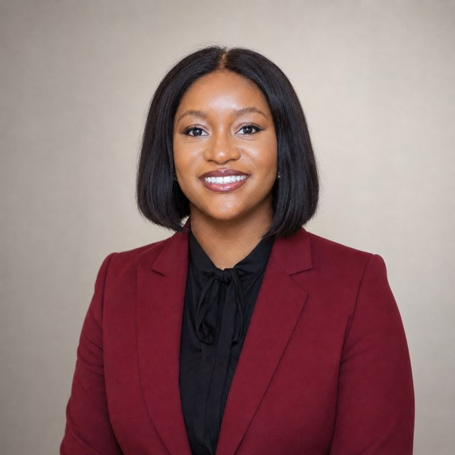
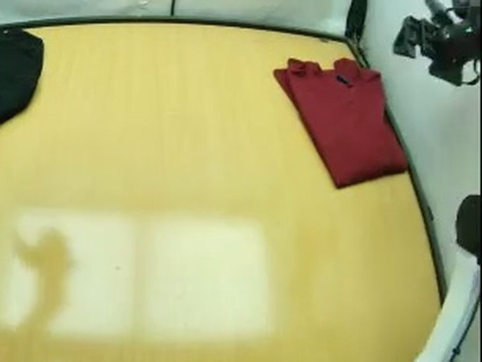
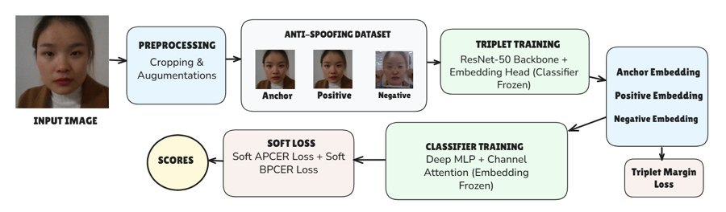
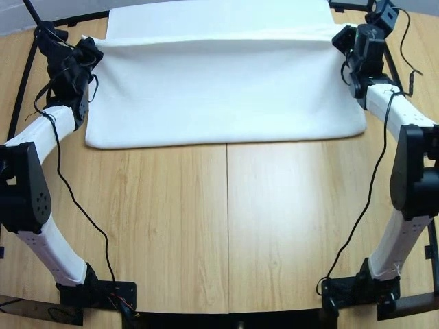

Miracle Olotuche James
I am a Research Associate at Carnegie Mellon University Africa. My research focuses on robot manipulation for long horizon, contact rich tasks, spanning robot learning, reward modeling and computer vision.
I began in computer vision, working on medical imaging, face attack detection and OCR for African scripts. That work led me through robot perception into robot learning, where I build progress reward models and use them to train vision language action policies on physical robots.

Research
I am interested in robots that can tell whether a task has truly succeeded, so that policies can keep improving beyond their demonstrations. My work covers reward modeling, vision language action policies and visual reasoning for manipulation.
Built a stage aware reward model across 12 tasks and a self supervised relative progress model that learns from demonstrations replayed at varying speeds, with stalls and reversals. Used these rewards to train π0.5 with reward aligned behavior cloning and deployed it on dual YAM arms with real time chunking.

Built a 1,397 question video dataset from raw robot logs, covering scene state, task stage, next actions and violation recovery, and fine tuned Molmo2-ER on it, raising task stage F1 from 0.14 to 0.92 and next action F1 from 0.16 to 0.66.

Leading OCR models fail on African scripts, and training on rendered text does not transfer to handwriting. This work composes verified handwriting lines into full pages with exact layout, reading order and transcription, and trains through a three stage curriculum, cutting character error from 2.08 to 0.31 on 150 held out pages. Extended to Ajami manuscripts in Hausa, Wolof and Fulfulde.

A single image model that detects both physical and digital face attacks, using a margin based triplet loss and Soft ACER, a loss that trains on confidence scores to match the evaluation metric.

A two stage system that detects white blood cells and their morphological attributes, then classifies five leukemia subtypes, designed for low cost microscopes in under resourced clinics.

A perception pipeline for towel folding robots: tracking a towel under occlusion with Grounding DINO and SAM2, predicting where the grippers will act next with a DINOv2 encoder, and detecting failures from video with a vision language model, where structured prompts raised F1 from 0.155 to 0.853.